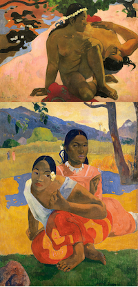

Koloniale Fremdherrschaft bedarf eines legitimierenden Unterbaus und ideologischer Rechtfertigung. Wissen und Wissensproduktion sind deshalb zentraler Bestandteil und Voraussetzung kolonialer Herrschaft. Die Kenntnis über die zu kolonisierende und zu missionierende Bevölkerung versetzte Kolonialherren in die Lage zur Ausübung von Macht und Missionare in die Lage ihren Glauben in den Gemeinschaften zu verbreiten.
Jürgen Zimmerer, Professor für Neuere Geschichte, betont, dass Kolonialismus nicht nur eine Praxis ist, sondern auch ein Diskurs über (vermeintliche) Unterschiede mit dem Ziel der Abgrenzung vom jeweils „Anderen“, sei es ´der Orientale´ oder ´der Afrikaner´. Diese Diskurse finden in der Wissenschaft, Kunst und Literatur statt. Sie generieren vermeintliches Wissen über die „Anderen“, flankieren formale Kolonialherrschaft und überdauern sie. So hatte, und hat noch heute, die Literatur mit ihren Kolonialromanen, die Wissenschaft bspw. in Ethnologie und Anthropologie verkörpert in Völkerkundemuseen oder die Kunst mit exotischen Südseemotiven
Südseemotive: Gaugin

einen großen Anteil an kolonialer Machtausübung, weil sie die öffentliche Wahrnehmung beeinfluss(t)en und steuer(te)n (vgl. Zimmerer 2013, S. 15).
So sind auch Sammler und Sammlungen vom Humboldtforum bis zu missionarischen Sammlungsbeständen in einen kolonialen Diskurs und Kontext zu verorten, da sie im Rahmen formeller oder informeller Kolonialherrschaft entweder zu wissenschaftlichen Zwecken angelegt wurden oder, um die interessierte Bevölkerung im fernen Mutterland über die fremden Kulturen zu informieren (vgl. dmb Leitfaden 2018, S.14,26)